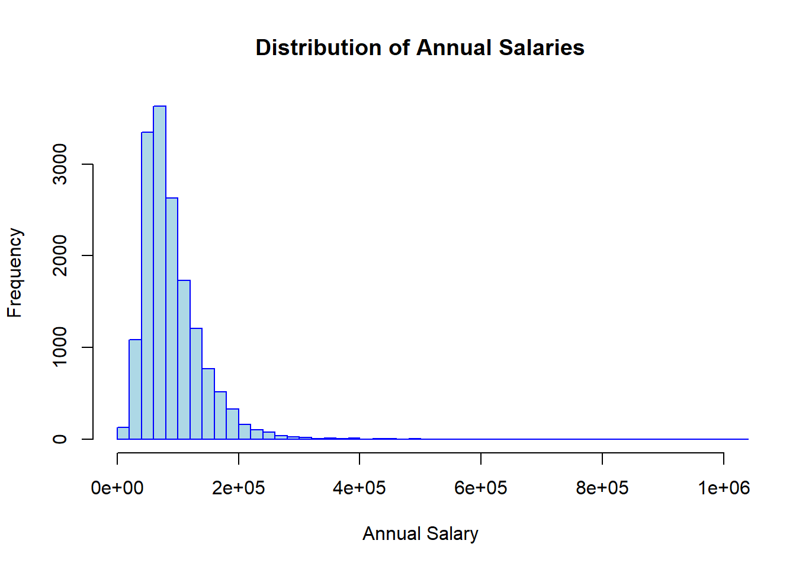

wine_data <- read.table('./wine/wine.data', sep = ',', header = FALSE)
# Set the headers according to the webpage.
colnames(wine_data) <- c('class',
'Alcohol',
'Malicacid',
'Ash',
'Alcalinity_of_ash',
'Magnesium',
'Total_phenols',
'Flavanoids',
'Nonflavanoid_phenols',
'Proanthocyanins',
'Color_intensity',
'Hue',
'0D280_0D315_of_diluted_wines',
'Proline')STATS 506
Problem Set 1
The link to the problem set 1 GitHub repository is at: https://github.com/skyshi1/STAT506/tree/main/problemSet1, as a sub-folder of the STATS 506 repository.
Problem 1 - Wine Data
(a)
(b)
In the “wine.names” document, it says we have 59, 71, and 48 wines within each class. Now we check the “wine.data” file and check if it is consistent.
wine_class_count <- table(wine_data$class)
print(wine_class_count)
1 2 3
59 71 48 Yes it is consistent.
(c)
1.
correlation_all <- cor(wine_data$Alcohol, wine_data$Color_intensity)
print(correlation_all)[1] 0.5463642The correlation between alcohol content and color intensity is 0.546.
2.
correlation_by_class <- numeric(3)
for (theclass in wine_data$class) {
subset <- wine_data[wine_data$class == theclass, ]
correlation_by_class[theclass] <- cor(subset$Alcohol, subset$Color_intensity)
}
print("Correlation for classes 1 2 3 are:")[1] "Correlation for classes 1 2 3 are:"print(correlation_by_class)[1] 0.4082913 0.2697891 0.3503777highest_corr_class <- which.max(correlation_by_class)
lowest_corr_class <- which.min(correlation_by_class)
cat("Highest correlation class is:", highest_corr_class, "\n")Highest correlation class is: 1 cat("Lowest correlation class is:", lowest_corr_class, "\n")Lowest correlation class is: 2 Class 1 has the highest correlation and class 2 has the lowest correlation.
3.
highest_color_intensity_index <- which.max(wine_data$Color_intensity)
highest_color_intensity_alcohol <- wine_data$Alcohol[highest_color_intensity_index]
cat("The alcohol content is:", highest_color_intensity_alcohol, "\n")The alcohol content is: 14.34 The alcohol content of the wine with the highest color intensity is: 14.34
4.
num_higher_proanthocyanins <- sum(wine_data$Proanthocyanins > wine_data$Ash)
num_total_wine <- nrow(wine_data)
percentage_higher_proanthocyanins <- (num_higher_proanthocyanins / num_total_wine) * 100
cat("The percentage is:", percentage_higher_proanthocyanins, "%\n")The percentage is: 8.426966 %8.427% of the wines had higher content of proanthocyanins compare to ash.
(d)
overall_averages <- colMeans(wine_data[, -1])
overall_averages_df <- as.data.frame(t(overall_averages))
rownames(overall_averages_df) <- "Overall"
class_averages <- aggregate(. ~ class, data = wine_data, FUN = mean)
class_averages_without_class <- class_averages[, -1]
summary_table <- rbind(overall_averages_df, class_averages_without_class)
rownames(summary_table)[2:4] <- paste("Class", class_averages$class)
cat("Now printing the summary table to visualize it:", "\n")Now printing the summary table to visualize it: print(summary_table) Alcohol Malicacid Ash Alcalinity_of_ash Magnesium Total_phenols
Overall 13.00062 2.336348 2.366517 19.49494 99.74157 2.295112
Class 1 13.74475 2.010678 2.455593 17.03729 106.33898 2.840169
Class 2 12.27873 1.932676 2.244789 20.23803 94.54930 2.258873
Class 3 13.15375 3.333750 2.437083 21.41667 99.31250 1.678750
Flavanoids Nonflavanoid_phenols Proanthocyanins Color_intensity
Overall 2.0292697 0.3618539 1.590899 5.058090
Class 1 2.9823729 0.2900000 1.899322 5.528305
Class 2 2.0808451 0.3636620 1.630282 3.086620
Class 3 0.7814583 0.4475000 1.153542 7.396250
Hue 0D280_0D315_of_diluted_wines Proline
Overall 0.9574494 2.611685 746.8933
Class 1 1.0620339 3.157797 1115.7119
Class 2 1.0562817 2.785352 519.5070
Class 3 0.6827083 1.683542 629.8958Good.
(e)
The information about the tests are based on what I Googled, I am not a statistics major but a physics major, so I haven’t seen them before (or maybe I forgot).
#' Perform manual two-sample t-Test
#'
#' This function calculates the t-statistic and p-value for a two-sample t-test
#' It is designed to test whether there is a significant difference in means between two independent samples.
#'
#' @param group1 A numeric vector representing the first sample.
#' @param group2 A numeric vector representing the second sample.
#' @return A list containing the t-statistic and the p-value for the test.
#' @examples
#' # Example usage:
#' group1 <- c(1, 2, 3, 4)
#' group2 <- c(4, 3, 2, 1)
#' manual_t_test(group1, group2)
manual_t_test <- function(group1, group2) {
# Calculate means
mean1 <- mean(group1)
mean2 <- mean(group2)
# Calculate variances
var1 <- var(group1)
var2 <- var(group2)
# Calculate sample sizes
n1 <- length(group1)
n2 <- length(group2)
# Calculate the t-statistic
t_stat <- (mean1 - mean2) / sqrt((var1/n1) + (var2/n2))
# Calculate the p-value
df <- ((var1/n1 + var2/n2)^2) / (((var1/n1)^2 / (n1 - 1)) + ((var2/n2)^2 / (n2 - 1)))
p_value <- 2 * (1 - pt(abs(t_stat), df))
# Return the t-statistic and p-value
return(list(t_statistic = t_stat, p_value = p_value))
}
class1_phenols <- wine_data$Total_phenols[wine_data$class == 1]
class2_phenols <- wine_data$Total_phenols[wine_data$class == 2]
class3_phenols <- wine_data$Total_phenols[wine_data$class == 3]
t_test_1_vs_2 <- manual_t_test(class1_phenols, class2_phenols)
t_test_1_vs_3 <- manual_t_test(class1_phenols, class3_phenols)
t_test_2_vs_3 <- manual_t_test(class2_phenols, class3_phenols)
cat("T-test between Class 1 and Class 2:\n")T-test between Class 1 and Class 2:print(t_test_1_vs_2)$t_statistic
[1] 7.420649
$p_value
[1] 1.889333e-11cat("\nT-test between Class 1 and Class 3:\n")
T-test between Class 1 and Class 3:print(t_test_1_vs_3)$t_statistic
[1] 17.12025
$p_value
[1] 0cat("\nT-test between Class 2 and Class 3:\n")
T-test between Class 2 and Class 3:print(t_test_2_vs_3)$t_statistic
[1] 7.012505
$p_value
[1] 1.621574e-10All of the p-values are very small, which contradicts the null hypothesis of having no difference in means. Therefore, we may say that the mean total phenols differ significantly between each pair of wine classes.
Problem 2 - AskAManager.org Data
(a)
askamanager_data <- read.csv('AskAManager.csv')Now the data is imported.
(b)
ask_a_manager_data <- read.csv('AskAManager.csv')
# Simplify column names
colnames(ask_a_manager_data) <- c(
'id',
'timestamp',
'age',
'industry',
'job_title',
'job_context',
'annual_salary',
'additional_salary',
'currency',
'other_currency',
'income_context',
'country',
'us_state',
'city',
'overall_experience',
'field_experience',
'education',
'gender',
'race'
)
print(head(ask_a_manager_data)) id timestamp age industry
1 1 4/27/2021 11:02:10 25-34 Education (Higher Education)
2 2 4/27/2021 11:02:22 25-34 Computing or Tech
3 3 4/27/2021 11:02:38 25-34 Accounting, Banking & Finance
4 4 4/27/2021 11:02:41 25-34 Nonprofits
5 5 4/27/2021 11:02:42 25-34 Accounting, Banking & Finance
6 6 4/27/2021 11:02:46 25-34 Education (Higher Education)
job_title job_context annual_salary
1 Research and Instruction Librarian 55000
2 Change & Internal Communications Manager 54600
3 Marketing Specialist 34000
4 Program Manager 62000
5 Accounting Manager 60000
6 Scholarly Publishing Librarian 62000
additional_salary currency other_currency income_context country
1 0 USD United States
2 4000 GBP United Kingdom
3 NA USD US
4 3000 USD USA
5 7000 USD US
6 NA USD USA
us_state city overall_experience field_experience
1 Massachusetts Boston 5-7 years 5-7 years
2 Cambridge 8 - 10 years 5-7 years
3 Tennessee Chattanooga 2 - 4 years 2 - 4 years
4 Wisconsin Milwaukee 8 - 10 years 5-7 years
5 South Carolina Greenville 8 - 10 years 5-7 years
6 New Hampshire Hanover 8 - 10 years 2 - 4 years
education gender race
1 Master's degree Woman White
2 College degree Non-binary White
3 College degree Woman White
4 College degree Woman White
5 College degree Woman White
6 Master's degree Man WhiteNow the titles are simplified, with printed headers as checks.
(c)
num_before <- nrow(ask_a_manager_data)
ask_a_manager_data_usd <- ask_a_manager_data[ask_a_manager_data$currency =="USD", ]
num_after <- nrow(ask_a_manager_data_usd)
cat("Number before filtering for USD:", num_before, "\n")Number before filtering for USD: 28062 cat("Number after filtering for USD:", num_after, "\n")Number after filtering for USD: 23374 (d)
ask_a_manager_data_age <- ask_a_manager_data_usd
ask_a_manager_data_age$age <- as.numeric(as.character(factor(ask_a_manager_data_usd$age,
levels = c("under 18", "18-24", "25-34", "35-44", "45-54", "55-64", "65 or over"),
labels = c(0, 18, 25, 35, 45, 55, 65))))
ask_a_manager_data_age$overall_experience <- as.numeric(as.character(factor(ask_a_manager_data_usd$overall_experience,
levels = c("1 year or less", "2 - 4 years", "5-7 years",
"8 - 10 years", "11 - 20 years", "21 - 30 years",
"31 - 40 years", "41 years or more"),
labels = c(1, 2, 5, 8, 11, 21, 31, 41))))
ask_a_manager_data_age$field_experience <- as.numeric(as.character(factor(ask_a_manager_data_usd$field_experience,
levels = c("1 year or less", "2 - 4 years", "5-7 years",
"8 - 10 years", "11 - 20 years", "21 - 30 years",
"31 - 40 years", "41 years or more"),
labels = c(1, 2, 5, 8, 11, 21, 31, 41))))
num_before <- nrow(ask_a_manager_data_age)
ask_a_manager_data_age <- ask_a_manager_data_age[
ask_a_manager_data_age$age >= 18 & # age need to be larger than 18
ask_a_manager_data_age$overall_experience <= (ask_a_manager_data_age$age - 18) & # should not start working before 18
ask_a_manager_data_age$field_experience <= ask_a_manager_data_age$overall_experience, # Field experience should be shorter than overall experience
]
num_after <- nrow(ask_a_manager_data_age)
cat("Number before filtering for impossible ages:", num_before, "\n")Number before filtering for impossible ages: 23374 cat("Number after filtering for impossible ages:", num_after, "\n")Number after filtering for impossible ages: 15915 (e)
I will plot the salary distribution first:
hist(ask_a_manager_data_age$annual_salary,
main = "Distribution of Annual Salaries",
xlab = "Annual Salary",
ylab = "Frequency",
col = "lightblue",
border = "blue",
xlim = c(0, 1000000),
breaks = 200
)
It is a skewed distribution, I decide to cut off the top 10% in the salaries and the bottom 10% in the salaries as extrema.
ask_a_manager_data_filtered <- ask_a_manager_data_age
lower_cutoff <- quantile(ask_a_manager_data_filtered$annual_salary, 0.10)
upper_cutoff <- quantile(ask_a_manager_data_filtered$annual_salary, 0.90)
num_before <- nrow(ask_a_manager_data_filtered)
ask_a_manager_data_filtered <- ask_a_manager_data_filtered[
ask_a_manager_data_filtered$annual_salary >= lower_cutoff &
ask_a_manager_data_filtered$annual_salary <= upper_cutoff,
]
num_after <- nrow(ask_a_manager_data_filtered)
cat("Number of observations before filtering salary:", num_before, "\n")Number of observations before filtering salary: 15915 cat("Number of observations after filtering salary:", num_after, "\n")Number of observations after filtering salary: 12798 cat("Lower cutoff:", lower_cutoff, "\n")Lower cutoff: 43000 cat("Upper cutoff:", upper_cutoff, "\n")Upper cutoff: 155000 Now the final sample size is 12798.
Problem 3 - Palindromic Numbers
(a)
#' Check if a number is palindromic
#'
#' This function checks if a given positive integer is a palindrome.
#'
#' @param n A positive integer to check.
#' @return A list with two elements:
#' - `isPalindromic`: A logical value indicating if the input is palindromic.
#' - `reversed`: The input number with its digits reversed.
#' @examples
#' isPalindromic(728827)
#' isPalindromic(39951)
isPalindromic <- function(n) {
n_str <- as.character(n)
n_reversed <- paste(rev(strsplit(n_str, "")[[1]]), collapse = "")
is_palindromic <- n_str == n_reversed
return(list(isPalindromic = is_palindromic, reversed = as.integer(n_reversed)))
}
isPalindromic(728827)$isPalindromic
[1] TRUE
$reversed
[1] 728827isPalindromic(39951)$isPalindromic
[1] FALSE
$reversed
[1] 15993The tested results are the same as in the problem set prompt.
(b)
#' Find the next palindromic number
#'
#' This function finds the next palindromic number that is greater than the input.
#'
#' @param n A positive integer input.
#' @return A single integer representing the next palindromic number greater than the input.
#' @examples
#' nextPalindrome(7152)
#' nextPalindrome(765431537)
nextPalindrome <- function(n) {
next_number <- n + 1
while (!isPalindromic(next_number)$isPalindromic) {
next_number <- next_number + 1
}
return(next_number)
}
nextPalindrome(7152)[1] 7227nextPalindrome(765431537)[1] 765434567The tested results are the same as in the problem set prompt.
(c)
test_numbers <- c(391, 9928, 19272719, 109, 2)
next_palindromes <- sapply(test_numbers, nextPalindrome)
cat("Next palindromic numbers for the numbers given are:\n")Next palindromic numbers for the numbers given are:print(next_palindromes)[1] 393 9999 19277291 111 3